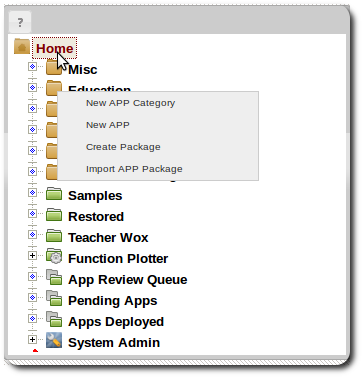
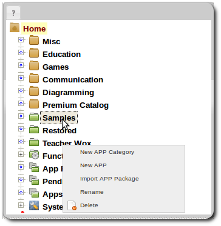

APP Taxonomy
Understanding APP Taxonomy
APPs are organized by a creating categories, all APPs belong to a category. Developers can create their own categories to organize their APPs. There is also the system taxonomy, to which developers can add APPs but not new categories. It should be noted that taxonomy categories are not the same as file system folders, categories are not folders.
The brown categories are system categories from the system taxonomy to which new APPs can be added but not new categories.
Creating Categories
Categories can be added either to the Home item or to other categories except system categories.
-
Right click Home item.

Or right click on any non-system category.
 - Select New APP Category.
Drag & Drop Categories
- Categories can be reorganized by dragging and dropping a category to another category. Note that only non-system categories can be reorganized.
Deleting Categories
-
Right click a category item.
- Select Delete.